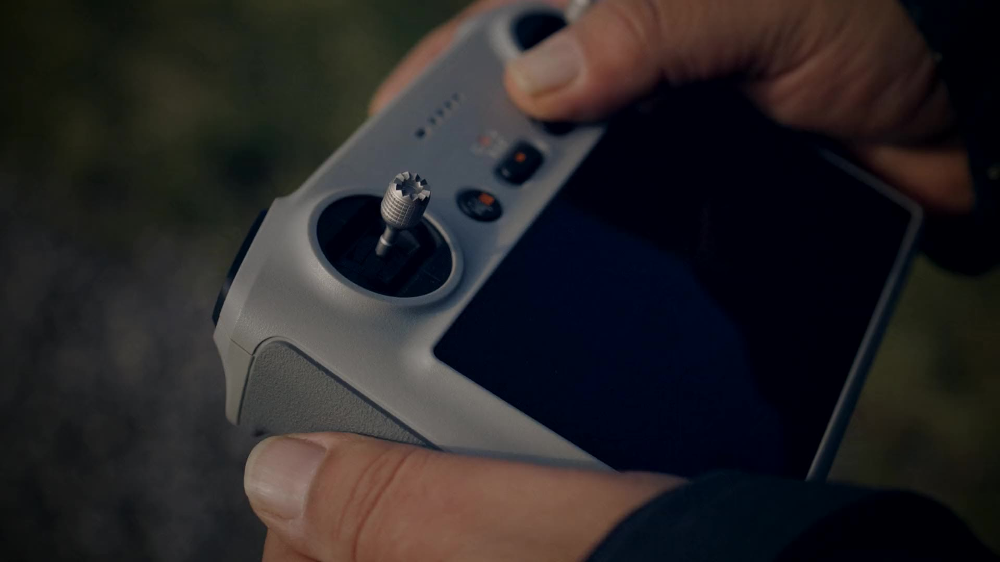
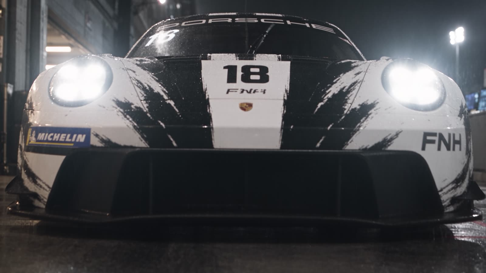
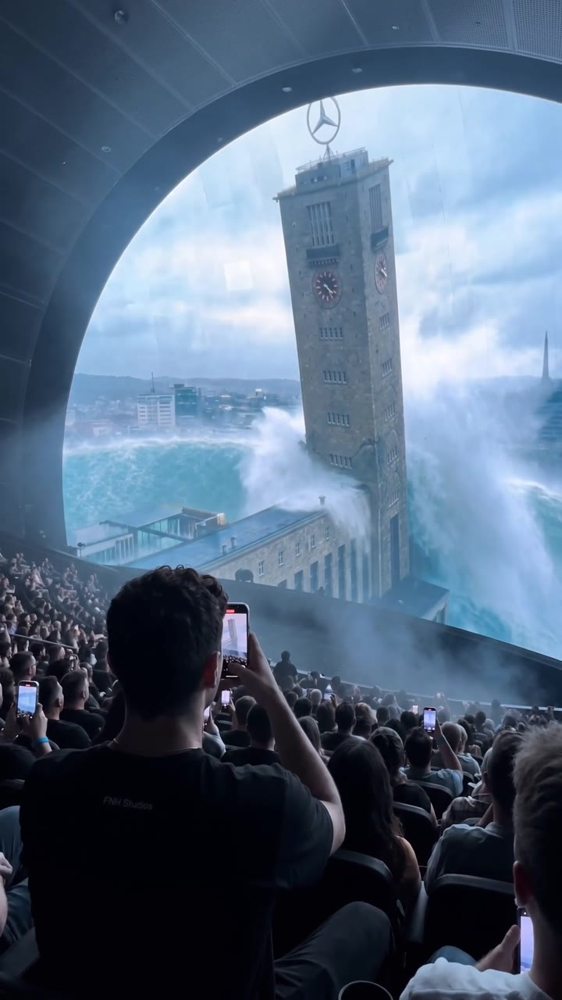
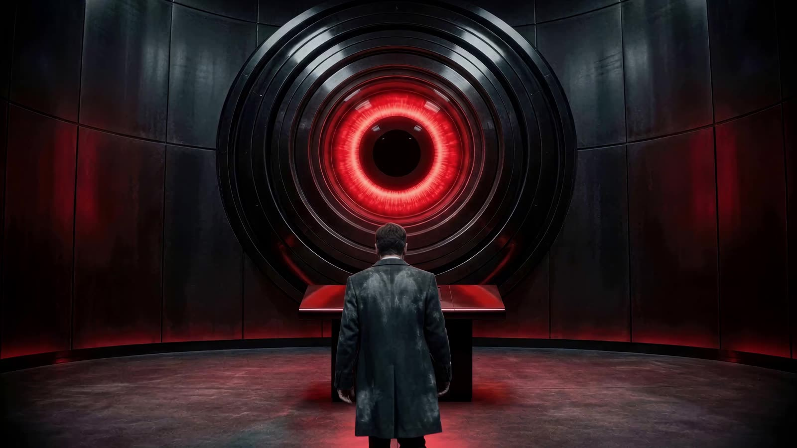
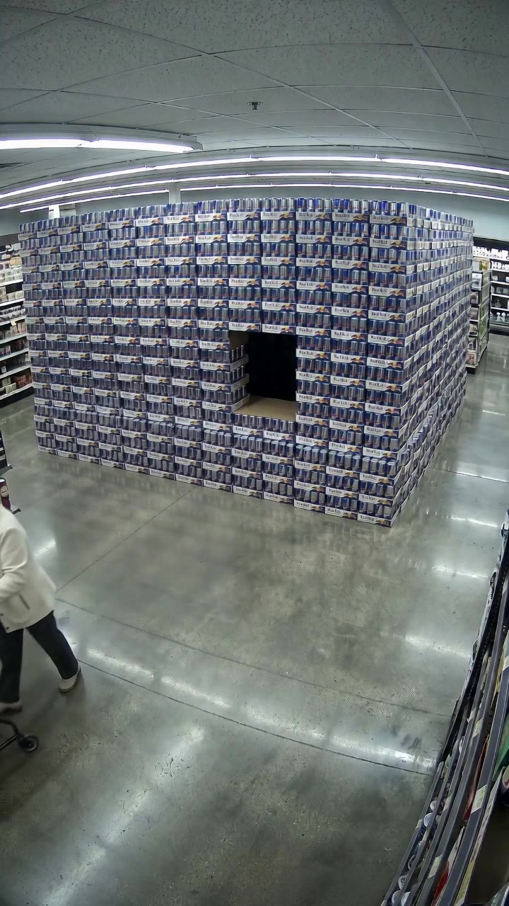
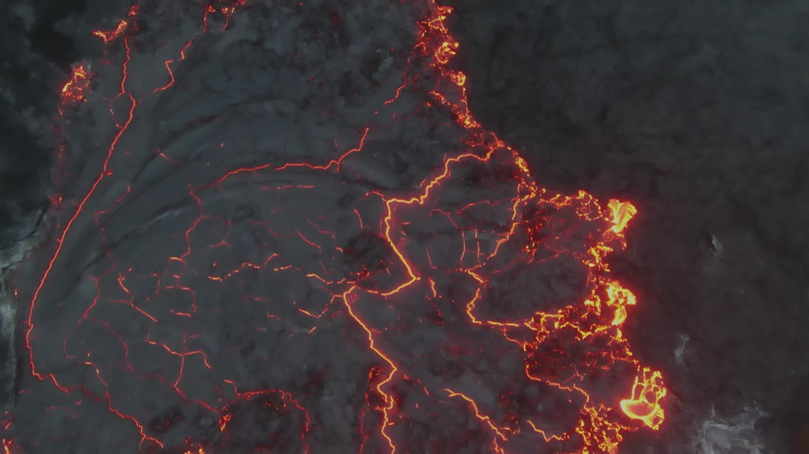
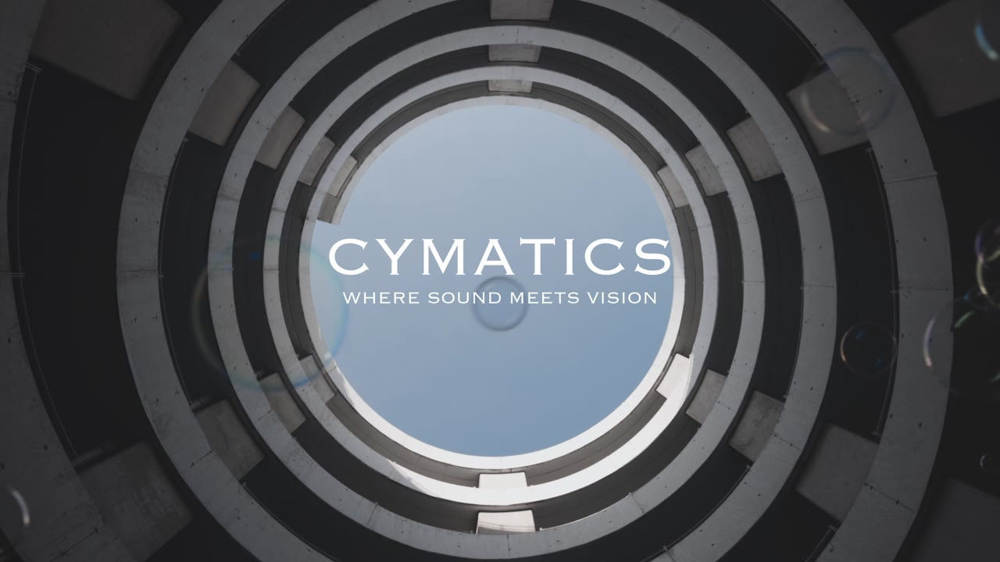
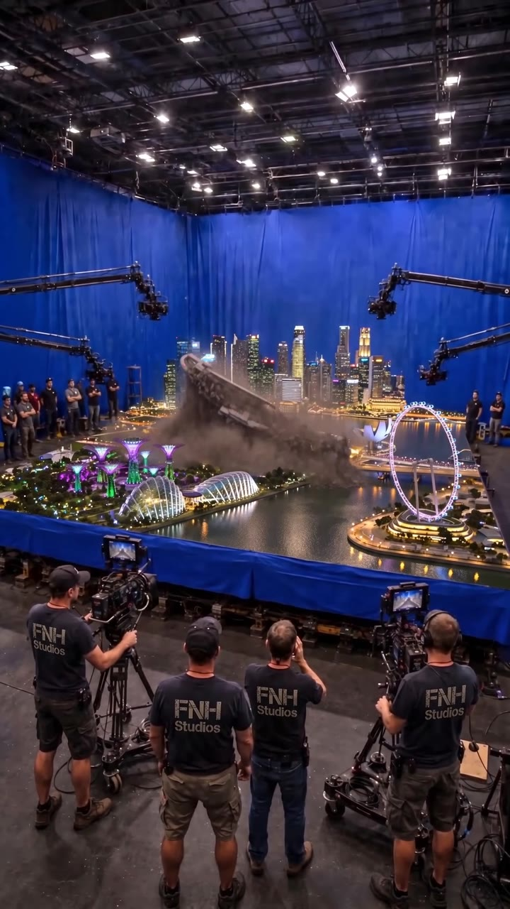

( Finn Hafemann — Filmemacher, Fotograf, Designer )
Die meisten drehen, was es gibt. Ich baue Welten, die es nicht geben dürfte.

Film, Foto, AI und Design aus Stuttgart.
( Showreel · 17 s · ohne Ton )
Nürburgring, OdyssAI, Island, Cymatics
( Der Ansatz )
Echte Kamera zuerst: Sony FX3, Canon R5, Drohne. Dann die Maschine: Startbild, ein Render, harter Qualitätscheck. Was bleibt, ist realistisch genug, dass man streitet, ob es echt ist.
( Arbeiten )
( 08 )
Nachtrennen im FNH-AnzugAI Film · 2026

3,4 Millionen AufrufeAI Film · 2026

Abschlussfilm, acht MinutenFilm · 2026

4,3 Millionen AufrufeAI Film · 2026
Echt genug, dass man streitet.
( 01 )Nürburgring 24hAI Film · 2026 · 1:30
( Die Studio-Serie )
Städte im Maßstab, die FNH-Crew im Bild, und jedes Mal geht etwas schief.

Drohne, R5 und ein VulkanFilm · 2022
737.000 AufrufeAI Film · 2026

Where sound meets visionKurzfilm · 2025

1,4 Millionen AufrufeAI Film · 2026
Alle Arbeiten →( 31 )
( 03 )OdyssAI 2028Abschlussfilm · 2026 · Trailer
( Alle Arbeiten )
( 31 )01Nürburgring 24hNachtrennen im FNH-Anzug, drei TeileAI Film2026
02OdyssAI 2028Abschlussfilm, TrailerFilm2026
03Island, Feuer und EisDrohne, R5 und ein VulkanFilm2022
04Oma und die Red-Bull-WandCCTV, 4,3 Millionen AufrufeAI Film2026
05Kuppelkino StuttgartDie Leinwand splittert, 3,4 MillionenAI Film2026
06Studio SingapurMiniatur-Marina-Bay, 1,4 MillionenAI Film2026
07CymaticsWhere sound meets visionFilm2025
08Husky, WasserpistoleDer vierte Welpe macht eine Oper darausAI Film2026
09Studio Stuttgart HbfMiniatur, Gleise, FlutAI Film2026
10Studio FlughafenAntonov, Meteore, MegafonAI Film2026
11Katze, MenschenketteRettung vom BäckereifensterAI Film2026
12Falltraum FernsehturmVom Turm ins BettAI Film2026
13A8 NotlandungReal × KI unter dem Bosch-ParkhausAI Film2026
14Flugzeugträger am WeltrandWasser, das aufhörtAI Film2026
15Dispatch 001Der Regiestuhl im SandsturmAI Film2026
16Studio ReykjavíkVulkan über der MiniaturstadtAI Film2026
17Studio TokyoTsunami, Tower, CrewAI Film2026
18GT3 RS, Regen-RigGreenscreen, RT XX 818AI Film2026
19Zug vs. LawineFPV durch den KunstschneeAI Film2026
20Katze, SlapfightKatze gegen StrongmanAI Film2026
21Kakadu vom SchrankFünfzehn Sekunden VerhandlungAI Film2026
22Pesto-PyramideCCTV im SupermarktAI Film2026
23Studio DubaiTsunami trifft BurjAI Film2026
24Studio ParisFlut unter dem EiffelturmAI Film2026
25Studio LondonSturmflut an der ThemseAI Film2026
26Wolke fangenSchlossplatz, ein Beutel, eine WolkeAI Film2026
27Angkor POVDschungel, Regen, StatueAI Film2026
28Bosch-Parkhaus, MeteoritEinschlag über der A8AI Film2026
29Der WünschewagenDokumentarfilm, 4:07Film2024
30Die BankKurzfilm, komplett auf dem SmartphoneFilm2024
31Basketball3D-Tracking und CompositingFilm2026
( Fotografie )
( 12 )Island, Seychellen, Prag, New York und ein Studio in Stuttgart. Licht, das Charakter zeigt.


( Design )
Studienprojekte an der LAZI Akademie, 2023 bis 2026


( Das Studio )
FNH ist Finn Nison Hafemann, freier Fotograf und Student an der LAZI Akademie Stuttgart/Esslingen. Fotografie, Video und Film, KI-Content und Mediendesign. Seine Bilder werden über iStock und Getty Images lizenziert.

KamerasCanon EOS R5 · R5 Mark II · Sony FX3
ObjektiveCanon RF, 15 bis 300 mm, Festbrennweiten und Zooms
LuftDJI Mavic 3 Pro · FPV · Neo II · Ronin RS4 Pro II
PostPhotoshop · Premiere · DaVinci Resolve · After Effects · Seedance
ZertifikateEU-Drohnenpilot A1/A3/A2 · cimdata Videoschnitt
BasisStuttgart · Esslingen · Reutlingen
Kamera zuerst. Maschine danach.
( Kontakt )
Etwas vor, das es noch nicht gibt?
info@finnison.comFilm, Foto, AI-Produktion, Design. Schreib mir Idee, Zeitraum und Ort, ich antworte mit einem Vorschlag.